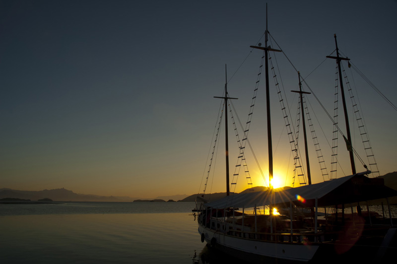
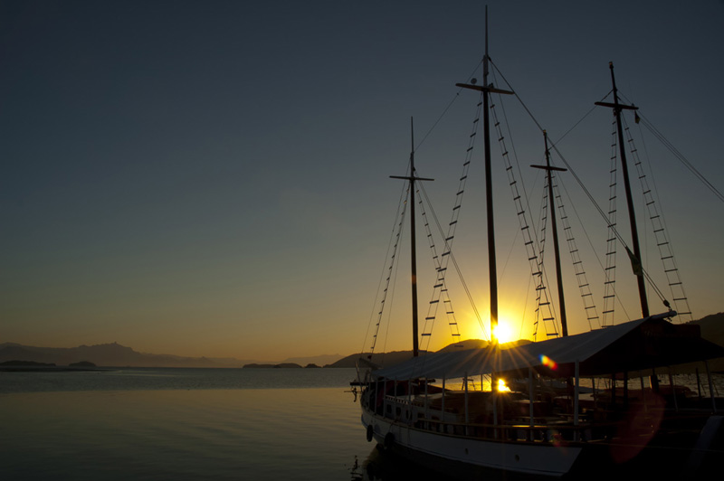

Paraty é um pedacinho do passado brasileiro, que nos remete ao período colonial, através de suas fortificações, ruas, casarões preservados e sua cultura. A história de Paraty é marcada por importantes acontecimentos ao longo dos séculos, com a participação nos ciclos da cana, do ouro e do café. A partir de agora, você é nosso convidado especial para relembrar toda essa tragetória, que levou Paraty a se tornar um Patrimônico Histórico Nacional.
As terras em que hoje a cidade de Paraty se encontra, eram ocupadas na época do descobrimento pelos Indígenas Guaianás, e logo depois pertenceriam à Capitania de São Vicente. A trilha aberta de Guaianás ligando o litoral ao interior do Brasil atraíram os colonos da Capitania.
Somente em meados do século XX que Paraty retoma seu desenvolvimento através do Ciclo do Turismo, que se tornou a principal fonte de renda e base da economia local. Com a reabertura da estrada Paraty-Cunha em 1954, que a ligava ao Estado de São Paulo, e a abertura da BR-101 na década de 1970 que liga Rio de Janeiro a Santos, a cidade foi redescoberta e tornou-se um polo de atração turística. Em 1958 o conjunto histórico de Paraty foi tombado pelo IPHAN – Instituto do Patrimônio Histórico e Artístico Nacional. Hoje a cidade tem sua vocação principal no Turismo, recebe dezenas de eventos anualmente, e tornou-se um dos principais polos turísticos do Brasil. Paraty se destaca não só pela sua rica cultura, mas também pelas riquezas naturais e sua excelente gastronomia e vida noturna. Venha descobrir os encantos de Paraty!

Conheça alguns dos pontos mais atrativos de paraty para você visitar:
Confira algumas das belíssimas imagens da cidade na galeria abaixo:


 
